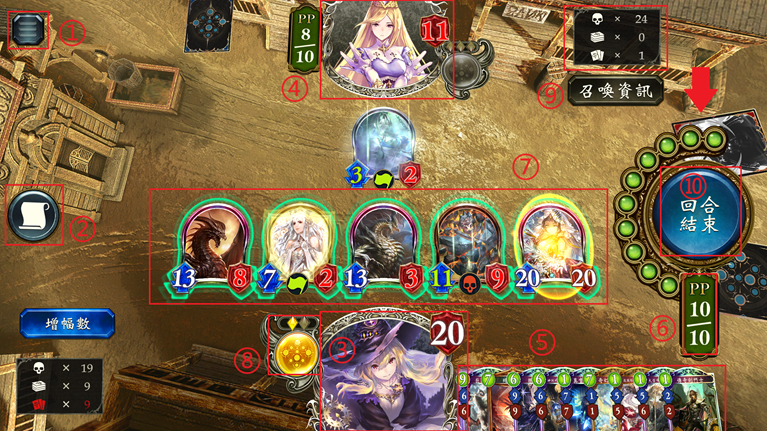

先攻/后攻


游戏开始前, 系统会随机决定双方玩家的先后手顺序, 先攻与后攻在机制方面存在一定的差异。
更换起始手牌

随后，双方会各自分到三张手牌，在对战开始前可进行一次换牌，选择更换的手牌将返回牌组，由牌组中的随机卡牌所替代
战斗界面

对战时所需信息基本都可以在对战界面中通过点击图标查看。
① 游戏菜单: 可对游戏进行设定或放弃对战。
② 对战资讯: 对战情况的记录, 可以查询双方行动的记录、被破坏的卡牌、已使用的卡牌等信息
③ 己方角色: 你选择的角色, 体力降至0或0以下时即为败北。体力在受到来自对方的伤害时减少。长按你的角色可选择表情。每回合可使用的表情次数有限制。
④ 对手角色: 对战对手的角色。使用你的从者发动攻击, 若使其体力降至0或0以下时即为胜利。
⑤ 手牌区: 闪烁绿光的卡牌表示现在可使用的卡牌。非闪烁的卡牌是由于PP (能量点) 不足尚不能使用或不符合使用条件的卡牌。毎回合开始时, 你可从自己的牌组中抽取1张卡牌加入手牌 (后手仅在第一回合可抽取2张)。战斗中无法查看牌组内容。
⑥ PP (能量点): 使用卡牌时, 需要消耗卡牌消耗栏所示数字的PP (能量点)。已消耗的PP, 会在你的回合开始时补充至上限。每回合可使用的PP最大值, 最初只有1, 但每回合都会增加1, 最终变为10。
⑦ 从者: 使用从者向对方角色或对方从者发动攻击以获取胜利。闪烁绿光的从者表示现在可攻击对手角色或从者。闪烁黄光表示只能攻击对方的从者。没有光环表示无法立即行动
⑧ EP (进化点): 表示战斗中可使自己从者进化的次数。消耗1EP，即可任选一个未进化从者使其进化，以获得强大的能力 (基础效果为攻击力/生命值 → +2/+2，并可以立即攻击对方从者)。先手有2点EP，后手有3点EP。后手可在第4回合、先手可在第5回合进行进化。到可以进化前将显示“离进化还有几回合”。使用方式为长按图标并拖动至己方场上从者的图标上
⑨ 从上到下依次代表: 已进入墓地的卡牌数量、牌堆中剩余的卡牌数量 (数量为0时, 下一张牌变为死神牌, 抽到后立刻输掉本场比赛，见图中红色箭头)、手牌数。
⑩ 回合结束: 想要结束你的回合时，请按此按键。就算不按此键，约90秒后也会自动结束本回合。

点击场上从者的图标可查看其详细信息
此外, 还可通过信息窗口最下方的“进化”按钮使从者进化